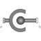

SphericalSpherical joint (3 constraints and no potential states, or 3 degrees-of-freedom and 3 states) |

|
Information
This information is part of the Modelica Standard Library maintained by the Modelica Association.
Joint with 3 constraints that define that the origin of frame_a and the origin of frame_b coincide. By default this joint defines only the 3 constraints without any potential states. If parameter enforceStates is set to true in the "Advanced" menu, three states are introduced. Depending on parameter useQuaternions these are either quaternions and the relative angular velocity or 3 angles and the angle derivatives. In the latter case the orientation of frame_b is computed by rotating frame_a along the axes defined in parameter vector "sequence_angleStates" (default = {1,2,3}, i.e., the Cardan angle sequence) around the angles used as states. For example, the default is to rotate the x-axis of frame_a around angles[1], the new y-axis around angles[2] and the new z-axis around angles[3], arriving at frame_b. If angles are used as states there is the slight disadvantage that a singular configuration is present leading to a division by zero.
If this joint is used in a chain structure, a Modelica translator has to select orientation coordinates of a body as states, if the default setting is used. It is usually better to use relative coordinates in the spherical joint as states, and therefore in this situation parameter enforceStates might be set to true.
If this joint is used in a loop structure, the default setting results in a cut-joint that breaks the loop in independent kinematic pieces, hold together by the constraints of this joint. As a result, a Modelica translator will first try to select 3 generalized coordinates in the joints of the remaining parts of the loop and their first derivative as states and if this is not possible, e.g., because there are only spherical joints in the loop, will select coordinates from a body of the loop as states.
In the following figure the animation of a spherical joint is shown. The light blue coordinate system is frame_a and the dark blue coordinate system is frame_b of the joint. (here: angles_start = {45, 45, 45}o).

Parameters (11)
| animation |
Value: true Type: Boolean Description: = true, if animation shall be enabled (show sphere) |
|---|---|
| sphereDiameter |
Value: world.defaultJointLength Type: Distance (m) Description: Diameter of sphere representing the spherical joint |
| angles_fixed |
Value: false Type: Boolean Description: = true, if angles_start are used as initial values, else as guess values |
| angles_start |
Value: {0, 0, 0} Type: Angle[3] (rad) Description: Initial values of angles to rotate frame_a around 'sequence_start' axes into frame_b |
| sequence_start |
Value: {1, 2, 3} Type: RotationSequence Description: Sequence of rotations to rotate frame_a into frame_b at initial time |
| w_rel_a_fixed |
Value: false Type: Boolean Description: = true, if w_rel_a_start are used as initial values, else as guess values |
| w_rel_a_start |
Value: {0, 0, 0} Type: AngularVelocity[3] (rad/s) Description: Initial values of angular velocity of frame_b with respect to frame_a, resolved in frame_a |
| z_rel_a_fixed |
Value: false Type: Boolean Description: = true, if z_rel_a_start are used as initial values, else as guess values |
| z_rel_a_start |
Value: {0, 0, 0} Type: AngularAcceleration[3] (rad/s²) Description: Initial values of angular acceleration z_rel_a = der(w_rel_a) |
| sequence_angleStates |
Value: {1, 2, 3} Type: RotationSequence Description: Sequence of rotations to rotate frame_a into frame_b around the 3 angles used as states |
| R_rel_start |
Value: Frames.axesRotations(sequence_start, angles_start, zeros(3)) Type: Orientation Description: Orientation object from frame_a to frame_b at initial time |
Inputs (2)
| sphereColor |
Default Value: Modelica.Mechanics.MultiBody.Types.Defaults.JointColor Type: Color Description: Color of sphere representing the spherical joint |
|---|---|
| specularCoefficient |
Default Value: world.defaultSpecularCoefficient Type: SpecularCoefficient Description: Reflection of ambient light (= 0: light is completely absorbed) |
Connectors (2)
Components (5)
| world |
Type: World |
|
|---|---|---|
| R_rel_start |
Type: Orientation Description: Orientation object from frame_a to frame_b at initial time |
|
| sphere |
Type: Shape |
|
| R_rel |
Type: Orientation Description: Dummy or relative orientation object to rotate from frame_a to frame_b |
|
| R_rel_inv |
Type: Orientation Description: Dummy or relative orientation object to rotate from frame_b to frame_a |
Used in Examples (2)
|
Modelica.Mechanics.MultiBody.Examples.Rotational3DEffects
Demonstrates that a cylindrical body can be replaced by Rotor1D model |
|
|
Modelica.Mechanics.MultiBody.Examples.Constraints
Body attached by one spring and spherical joint or constrained to environment |